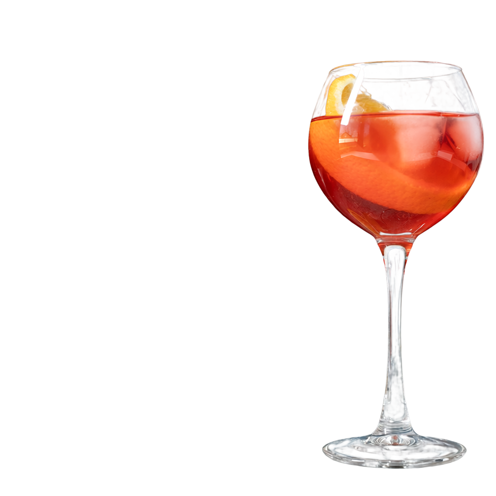

From pretrained RGB to RGBA
Existing RGBA generation methods commonly learn a transparency-specific representation through reconstruction, introducing an additional training stage and potentially altering the RGB decoding function inherited from pretrained models. We present AlphaAnything, a lightweight framework that extends pretrained RGB generators to RGBA directly in their original latent space, without RGBA reconstruction pretraining. AlphaAnything inserts LoRA modules into the generative transformer and attaches an alpha branch to the frozen RGB VAE decoder. Unidirectional RGB-to-alpha feature sharing allows opacity supervision to shape the generative latent while guaranteeing that, for any fixed latent, RGB decoding remains identical to that of the pretrained decoder. We further introduce Endpoint-Aware Alpha Loss (EA Loss), which derives opacity supervision from the complementary foreground–background weights used in compositing. It supports exact opacity endpoints and continuous partial transparency while emphasizing localized alpha errors. Experiments on text-to-RGBA and image-to-RGBA tasks across multiple pretrained RGB backbones demonstrate competitive generation quality, and controlled ablations validate the shared-latent training design and EA Loss.
From a scene to a layer
Select an example to inspect its extraction prompt, and drag the divider to compare the input with the extracted RGBA output.

Extract the object described by the text, preserving fine details and transparency: A clear long-stemmed glass holds a coral-red cocktail with large ice cubes and an orange slice. Bright reflections run down its rounded bowl and slender stem to the oval glass foot.
Selected inference results. The original RGBA colors and alpha are retained; the background is for visualization. QR and platform marks in the cocktail input are locally blurred.
Imagine it. Generate the layer.
Glass, fabric, feathers, and more. Select a result to inspect its generation prompt and alpha channel.
One idea. Many layers. A finished scene.
AlphaAnything generates individual RGBA elements, which are then manually arranged into a composition. Drag to explore the stack in 3D, replay the build, and inspect the layers behind each result.
Drag to rotate the layers. Use arrow keys to rotate, plus and minus to zoom, and Home to reset the view. Double-click to reset. On a touchscreen, drag sideways to rotate or swipe vertically to scroll the page.
Starting idea & reference
A visual reference for the manually arranged scene. RGBA elements are generated with AlphaAnything; backgrounds from the original RGB backbone and solid-color canvases are identified separately.
Reference prompt
The displayed stack contains the actual layers, manually arranged into each composition. Original generated alpha is retained; opaque backgrounds generated with the original RGB backbone and solid-color canvases are identified separately. AVENORIQ is a fictional name used in a generated example. Motion and perspective are viewing effects.
From a single image to a layer stack.
AlphaAnything extracts individual RGBA layers from a source image, using a separate prompt for each layer. The same source image is supplied to every extraction request. Compare the input with the recomposed scene, or inspect each layer on its own.
In Layers, drag to rotate the stack, use arrow keys to rotate, plus and minus to zoom, and Home to reset the view. In Recomposed, select a foreground layer and drag to move it. Use corners to resize, the top handle to rotate, arrow keys to move, plus and minus to resize, and bracket keys to rotate. Hold Shift with arrow keys for larger steps. Home resets the selected layer. Background stays fixed.
Starting idea & reference
Each requested RGBA layer is extracted from the same source image using a separate prompt.
Reference prompt
Input, Layers and Split show the original image and extraction layout. Recomposed is a separate editing view: move, rotate or resize foreground layers while the background stays fixed. Your edits are kept when you return to Recomposed. Reset all restores that case's layout.
Appearance and opacity in the original RGB latent space
Transformer LoRA modules and a lightweight alpha branch extend a pretrained RGB generator to RGBA through generative training alone, without explicit RGBA representation pretraining.
Retain RGB decoding
The pretrained RGB encoder and decoder stay frozen. Unidirectional RGB-to-alpha connections preserve RGB decoding for any fixed latent.
Learn appearance + opacity
Transformer LoRA and the alpha branch are trained jointly with flow matching and alpha supervision in the original RGB latent space, without RGBA reconstruction training.
Supervise alpha directly
Endpoint-Aware Alpha Loss (EA Loss) exploits the compositing structure of alpha to jointly supervise exact opacity endpoints, soft transparency, and localized errors.